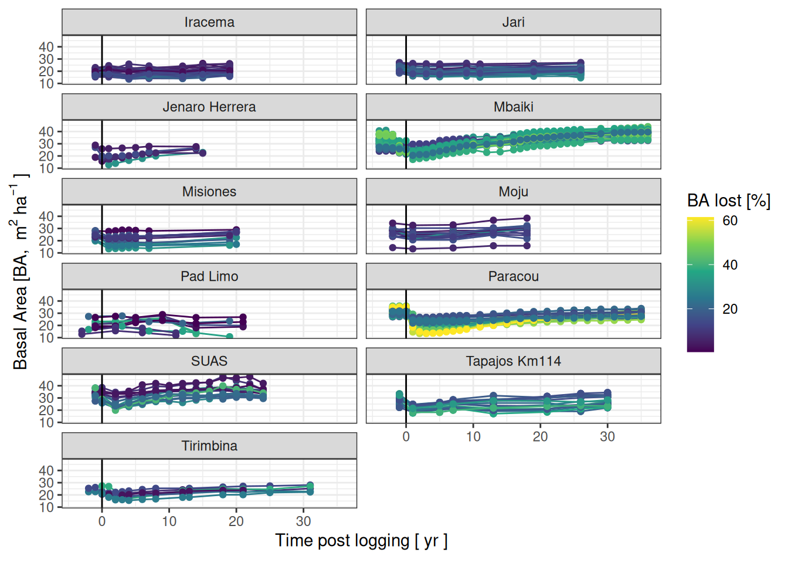
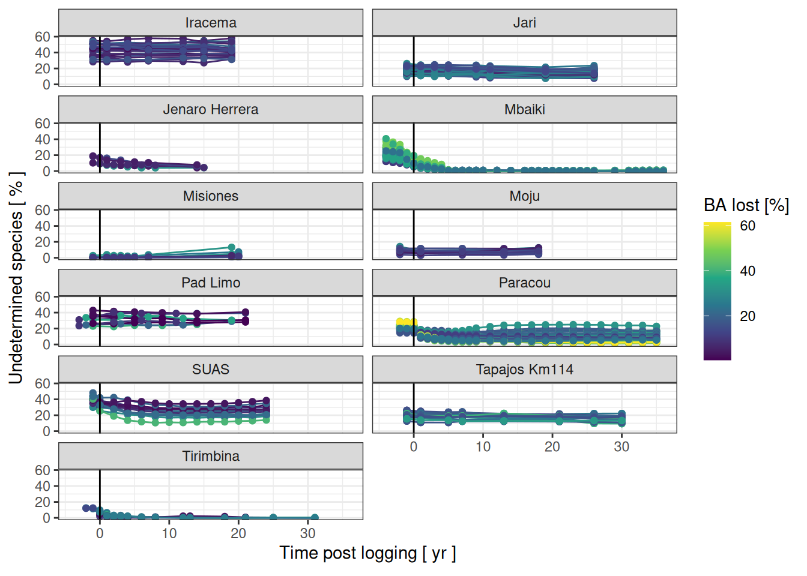
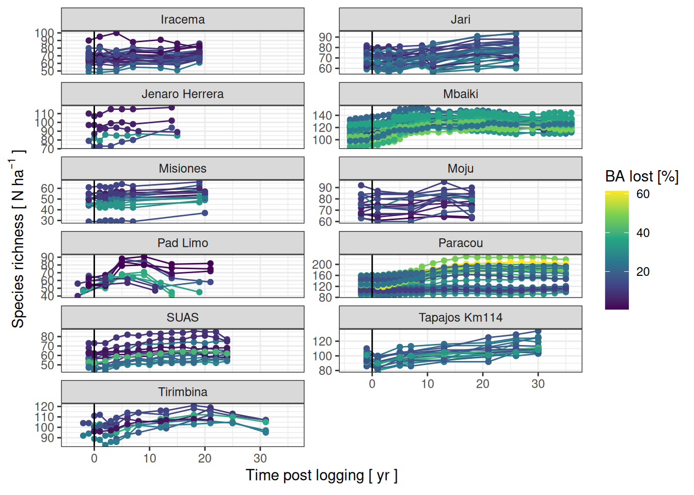
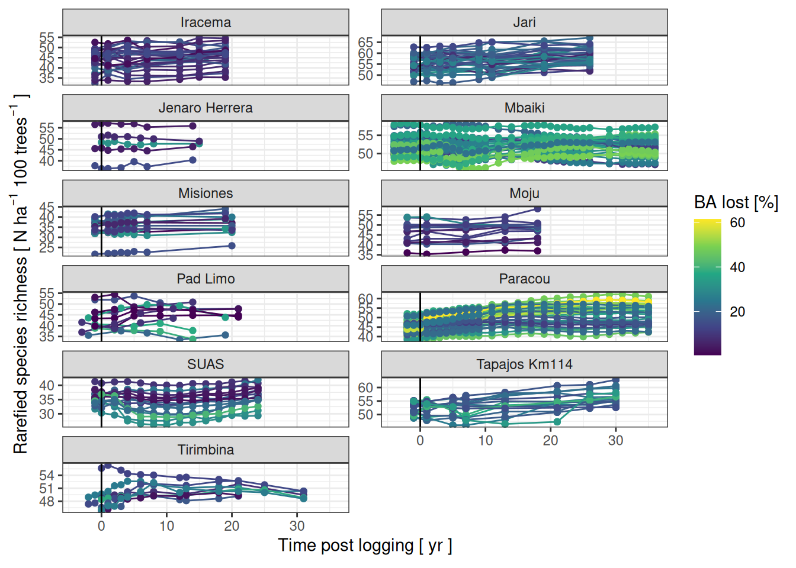

Code
library(tidyverse)library(tidyverse)The 11 study sites comprise a new compilation of longitudinal tree census records from tropical forest experiments in which defined logging treatments were imposed, and forest recovery was determined through periodic censuses on permanent plots. The sites comprises 7 sites in South America (Argentina: Misiones; Costa Rica: Tirimbina; Brazil: Iracema, Jari, Jenaro Herrera, Moju, Pad Limo; French Guian: Paracou), 1 site in Africa (Mbaiki in Central African Republic) and 1 site in Asia (SUAS in Malaysia) (Table X). The sites range in latitude from 27°S to 11°N and in longitude from 84°W to 117°E. They are characterised by a subtropical to tropical climate, with annual precipitation ranging from 1,236 to 3,640 mm and dry seasons lasting from 37 to 177 days (Abatzoglou et al. 2018). Selective logigng happened in all sites with X% sites including reduced impact logging parcatives and X% sites with additional practices (to be listed). All sites include pre-logging inventories and some ontrol and undisturbed plots (X sites). Depending on the site, plot areas range from 0.25 to 6.25 hectares, with a total sampled area ranging from X to 56 hectares (see Table X). To facilitate comparison, the plots were virtually pulled or subdivided into standard 1-hectare plots. All trees with a diameter at breast height (DBH) above 10 cm (except in Jari where the minimum DBH was 20 cm) were inventoried and then spatialised before botanical identification. Their diameters were regularly measured, with X to 28 censuses conducted over X to 18 years post-logging. The 110 study sites were selected from a larger pool of 31 sites in tropical forests. However, we focused on sites with more than one logged plot and several censuses shortly after logging, with a minimum of two censuses, and the presence of pre-logging inventories.
Chunks below help preparing the data for the analyses.
library(googlesheets4)
read_sheet("https://docs.google.com/spreadsheets/d/1fq2owxMBLBwwibcdw2uQQFxnIhsMbaH4Qcj_xUwVvSQ/edit?usp=sharing", 2) |> # nolint
separate_rows(site_raw, sep = ",") |>
write_tsv("data/raw_data/sites.tsv")
read_sheet("https://docs.google.com/spreadsheets/d/1fq2owxMBLBwwibcdw2uQQFxnIhsMbaH4Qcj_xUwVvSQ/edit?gid=0#gid=0", col_types = "c") |> # nolint
rename_all(tolower) |>
select(site, plot, treatment, year_of_harvest, longitude) |>
write_tsv("data/raw_data/metadata.tsv")
read_sheet("https://docs.google.com/spreadsheets/d/1fq2owxMBLBwwibcdw2uQQFxnIhsMbaH4Qcj_xUwVvSQ/edit?usp=sharing",
"plot_correspondance",
col_types = "c"
) |>
write_tsv("data/raw_data/plot_metadata.tsv")
read_sheet("https://docs.google.com/spreadsheets/d/1fq2owxMBLBwwibcdw2uQQFxnIhsMbaH4Qcj_xUwVvSQ/edit?usp=sharing",
"spurious",
col_types = "c"
) |>
na.omit() |>
write_tsv("data/raw_data/spurious.tsv")metadata <- read_tsv("data/raw_data/metadata.tsv") |>
rename(site_raw = site) |>
left_join(read_tsv("data/raw_data/sites.tsv")) |>
select(-site_raw) |>
separate(year_of_harvest, "year_of_harvest") |>
mutate(year_of_harvest = as.numeric(year_of_harvest)) |>
rename(harvest_year = year_of_harvest) |>
mutate(treatment = ifelse(treatment == "Control", "control", "logged")) |>
group_by(site) |>
mutate(harvest_year_min = min(harvest_year, na.rm = TRUE)) |>
mutate(harvest_year = ifelse(site == "Paracou", 1986, harvest_year)) |>
mutate(harvest_year_min = ifelse(site == "Paracou", 1986, harvest_year_min))
vars <- c("ba", "diversity_q0_sp", "diversity_q0_sp_rar", "p_undet_spp")
sites <- c(
"Iracema", "Jari", "Jenaro Herrera", "Mbaiki", "Misiones", "Moju",
"Pad Limo 2 Barracos", "Pad Limo Chico Bocao", "Pad Limo Cumaru",
"Pad Limo Jatoba", "Pad Limo Pocao", "Pad Limo STCP",
"Paracou", "Tapajos Km114", "Tirimbina", "SUAS"
# "SUAS", # removed until diversity_q0_sp_rar is not computed in v10
)
pad_sites <- c(
"Pad Limo 2 Barracos", "Pad Limo Chico Bocao", "Pad Limo Cumaru",
"Pad Limo Jatoba", "Pad Limo Pocao", "Pad Limo STCP"
)
spurious <- read_tsv("data/raw_data/spurious.tsv")
data <- read_csv("data/raw_data/aggregated_data_v10.csv") |>
na.omit() |>
rename_all(tolower) |>
rename(site_raw = site) |>
left_join(read_tsv("data/raw_data/sites.tsv")) |>
select(-site_raw) |>
rename(new_plot = plot) |>
left_join(read_tsv("data/raw_data/plot_metadata.tsv")) |>
left_join(metadata) |>
select(-plot) |>
rename(plot = new_plot, area = new_plot_area) |>
filter(site %in% sites) |>
filter(!(site %in% spurious$site &
plot %in% spurious$plot &
year %in% spurious$year)) |>
mutate(plot = ifelse(site %in% pad_sites,
paste(site, plot),
plot
)) |>
mutate(site = ifelse(site %in% pad_sites, "Pad Limo", site)) |>
filter(variable %in% vars) |>
mutate(rel_year = ifelse(treatment == "control",
year - harvest_year_min,
year - harvest_year
)) |>
pivot_wider(names_from = variable, values_from = value) |>
filter(treatment == "logged") |>
select(-longitude, harvest_year_min)
dist_obs <- data |>
filter(rel_year > 0) |>
group_by(site, plot) |>
summarise(ba_post = min(ba, na.rm = TRUE)) |>
left_join(data %>%
filter(rel_year <= 0) |>
group_by(site, plot) |>
summarise(ba_pre = median(ba, na.rm = TRUE))) |>
mutate(dist_obs = (ba_pre - ba_post) / ba_pre) |>
select(site, plot, dist_obs) |>
mutate(dist_obs = ifelse(dist_obs < 0, 0, dist_obs))
data |>
left_join(dist_obs) |>
filter(dist_obs > 0) |>
mutate(sitenum = as.numeric(as.factor(site))) |>
mutate(plotnum = as.numeric(as.factor(paste0(site, "_", plot)))) |>
write_tsv("data/derived_data/data.tsv")A map of sites and a table of sites information (to be defined) need to be redone.
Basal area trajectories were used to defined the disturbance intensity per plot in percent as the median of basal area before logging (most of the time a single value) and the minimal basal area after logging.
read_tsv("data/derived_data/data.tsv") |>
ggplot(aes(rel_year, ba,
group = paste(site, plot), col = dist_obs * 100
)) +
geom_line() +
geom_point() +
facet_wrap(~site, nrow = 6) +
theme_bw() +
xlab(expression("Time post logging" ~ "[ yr ]")) +
ylab(expression("Basal Area" ~ "[BA, " ~ m^2 ~ ha^{
-1
} ~ "]")) +
geom_vline(xintercept = 0) +
scale_color_viridis_c("BA lost [%]")
read_tsv("data/derived_data/data.tsv") |>
ggplot(aes(rel_year, p_undet_spp*100,
group = paste(site, plot), col = dist_obs * 100
)) +
geom_line() +
geom_point() +
facet_wrap(~site, nrow = 6) +
theme_bw() +
xlab(expression("Time post logging" ~ "[ yr ]")) +
ylab(expression("Undetermined species" ~ "[ % ]")) +
geom_vline(xintercept = 0) +
scale_color_viridis_c("BA lost [%]")
For each site and plot, we investigated the raw species richness as the total number of species knowingly biased by the number of stems, number of tree identified to the species level, and botanist expertise.
read_tsv("data/derived_data/data.tsv") |>
ggplot(aes(rel_year, diversity_q0_sp,
group = paste(site, plot), col = dist_obs * 100
)) +
geom_line() +
geom_point() +
facet_wrap(~site, scales = "free_y", nrow = 6) +
theme_bw() +
xlab(expression("Time post logging" ~ "[ yr ]")) +
ylab(expression("Species richness" ~ "[" ~ N ~ ha^{
-1
} ~ "]")) +
geom_vline(xintercept = 0) +
scale_color_viridis_c("BA lost [%]")
For each site and plot, we further investigated the raredfied species richness using a jackknife procedure to build the rarefaction curve and expressing species richness equivalent to 100 trees. The metric corrects for the variation of number of stems in time, but not number of tree identified to the species level, and botanist expertise. However, as trajectories will be relatively modelled per plot, we may assume that they are comparable.
read_tsv("data/derived_data/data.tsv") |>
ggplot(aes(rel_year, diversity_q0_sp_rar,
group = paste(site, plot), col = dist_obs * 100
)) +
geom_line() +
geom_point() +
facet_wrap(~site, scales = "free_y", nrow = 6) +
theme_bw() +
xlab(expression("Time post logging" ~ "[ yr ]")) +
ylab(expression("Rarefied species richness" ~ "[" ~ N ~ ha^{
-1
} ~ "100 trees"^{
-1
} ~ "]")) +
geom_vline(xintercept = 0) +
scale_color_viridis_c("BA lost [%]")